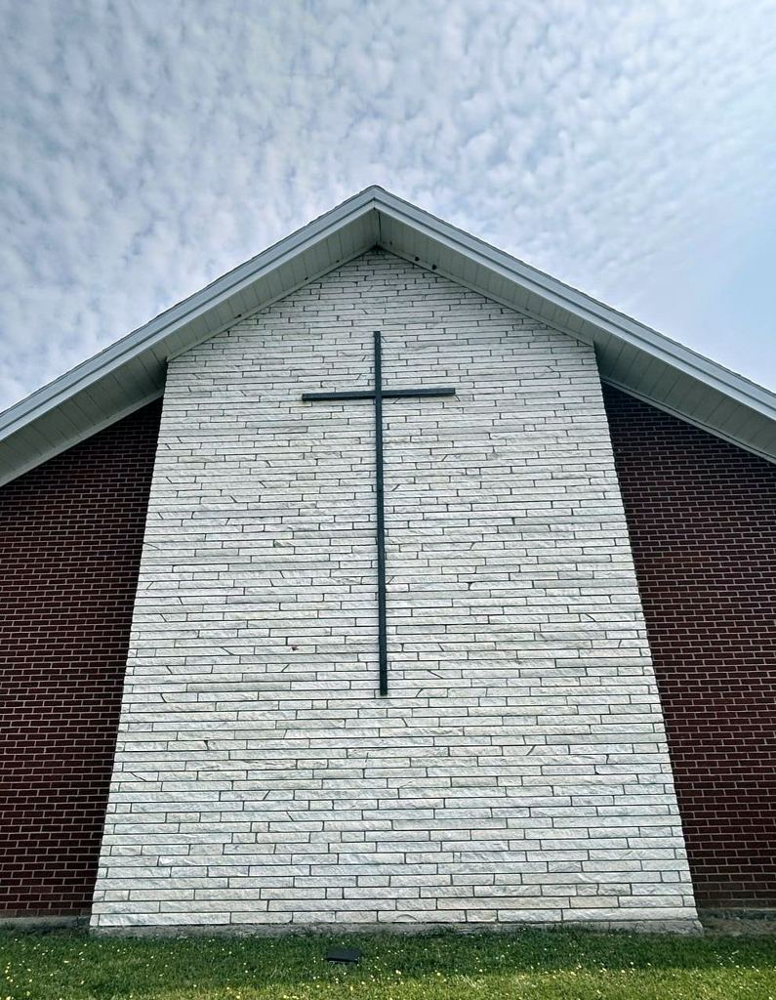

Services
Bat Removal
One bat inside the house is a same-problem-every-time job, so it carries a set price.
Call when you see it, and keep the room closed if you can. The price covers the trip, the search, and the removal of the one bat.
The check for more costs nothing. If a bat was seen in the house — gone now, or still inside — the inspection of the attic and the rest of the house is free, so the question of whether there are more gets answered properly.
Signs of more than one — droppings in the attic, staining at an entry point, bats seen at dusk — mean a colony, and colony and exclusion work is priced by free estimate after the look.
The price, with its terms
One bat, residential. Paid before scheduling. Non-refundable if the bat is gone on arrival. Commercial: $523.50.
A bat was seen in the house and you want the attic and the rest of the house checked for more: the inspection is free. If a bat is removed, the $349 covers the removal — the inspection part is still free. On commercial properties the inspection is $245.70, and it may be waived case by case.
The full card is on the rate card.
Start it.
Call, text a photo of what you're seeing, or use the form — it asks this service's questions, and only those.
From the field
The work, photographed.




Every photo on this page is a real Elite job. The full set is on the work page.
The look
What the inspection or estimate reads.
- The bat itself, or the sign of more than one — guano, staining, entry gaps
- Entry points at gables, dormers, log joints, vents, and rooflines
- Guano build-up in attic corners and wall voids
- For colonies: the full entry map, which is what the exclusion is built from
One bat in a living space is the set-price job above. A colony is different work: the entries are mapped, the bats are excluded through one-way doors at the right season, and the entries are sealed — priced by free estimate after the look, because no two rooflines are the same.
Commercial properties included. The church in these photos had the same gable entry as the house beside it — bat work is bat work, on a home or a commercial building, and the inspection reads it the same way.
Straight answers
Asked, and answered plainly.
Is the bat inspection free?
Yes. If a bat was seen in the house — gone now, or still inside — the inspection of the attic and the rest of the house, to answer whether there are more, is free. The $349 applies when a bat is removed; the inspection part carries no fee.
What if the bat is gone when you arrive?
The $349 stands — it pays for the trip and the search. That's stated before scheduling, not after.
What if there is more than one bat?
Then it's colony work: an entry map and exclusion, priced by free estimate. The one-bat price covers one bat.
Do you clean up guano?
Yes — attic cleanup and insulation work after a colony is part of the same conversation, and the guano photos on this page are from exactly that work.
Fastest answer
Text a photo of the problem.
A photo gets the right man and the right tools on the truck — and for vent work, the photos set the price tier. Text it to (315) 540-0137.
Text a photo